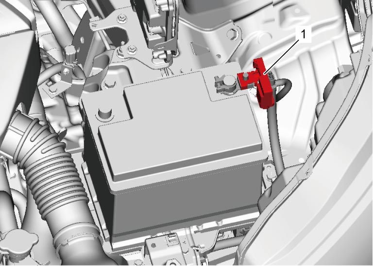
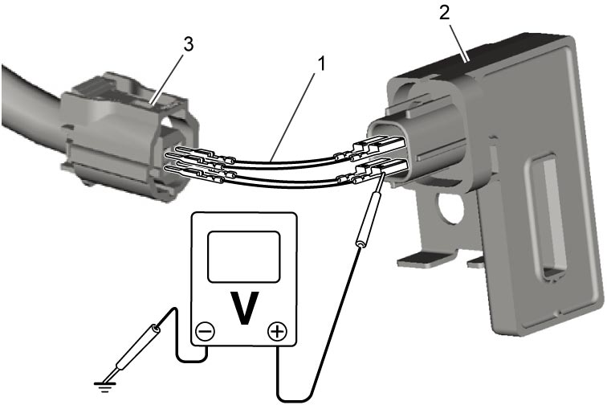
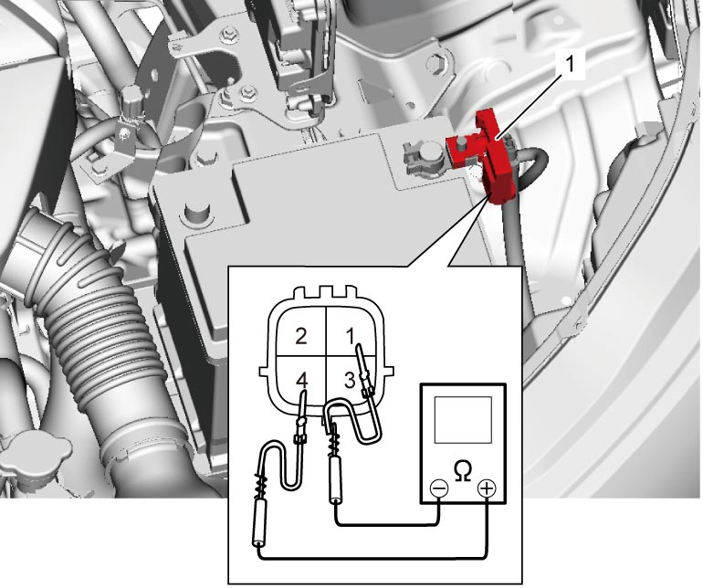
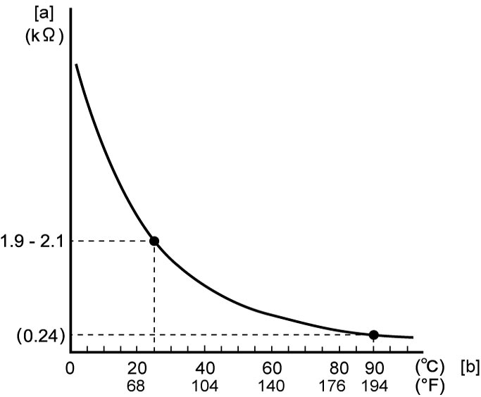

1C
| Electric Load Current Sensor On-Vehicle Inspection (If Equipped) |
Battery Current
Using SUZUKI scan tool
1)With ignition “OFF”, connect SUZUKI scan tool to DLC.
2)Check that battery current value displayed on SUZUKI scan tool changes to values indicated below as electric load increases.
If check result is not as specified, check the following points.

Battery current (Reference)
Ignition “ON”: 2 to 8 A
Ignition “ON” and headlight ON: 10 to 24 A
Ignition “ON”, headlight ON and blower speed selector in MAX position: 24 to 33 A
•Electric load current sensor circuits (power, ground and output)
•Battery negative (–) cable
•The following charging system components
If electric load current sensor circuits and charging system are in good condition, replace electric load current sensor (1).
•Battery negative (–) cable
•The following charging system components
—Battery 
—Generator
—Generator output circuit
—Generator LIN communication circuit according to Step 2 under DTC U2001:K14C
—Generator
—Generator output circuit
—Generator LIN communication circuit according to Step 2 under DTC U2001:K14C

 "Expand image")
Without using SUZUKI scan tool
1)With ignition “OFF”, disconnect electric load current sensor connector.
2)Using service wires (1), connect electric load current sensor (2) and electric load current sensor connector (3).
3)With ignition “ON”, check that voltage varies depending on electric load referring to Inspection of ENG A-STOP Control Module and Its Circuits.
If check result is not as specified, check the following parts and circuits.

 "Expand image")
•Electric load current sensor circuits (power, ground and output)
•Battery negative (–) cable
•The following charging system components
If electric load current sensor circuits and charging system are in good condition, replace electric load current sensor.•Battery negative (–) cable
•The following charging system components
—Battery
—Generator
—Generator output circuit
—Generator LIN communication circuit according to Step 2 under DTC U2001:K14C
—Generator
—Generator output circuit
—Generator LIN communication circuit according to Step 2 under DTC U2001:K14C
Temperature
1)With ignition “OFF”, disconnect electric load current sensor connector.
2)Connect ohmmeter to electric load current sensor (1) as shown in figure.

 "Expand image")
3)Check that resistance varies depending on battery temperature as shown in graph below.
If check result is not as specified, replace electric load current sensor.
If check result is not as specified, replace electric load current sensor.

 "Expand image")
| [a]: | Resistance | [b]: | Temperature |